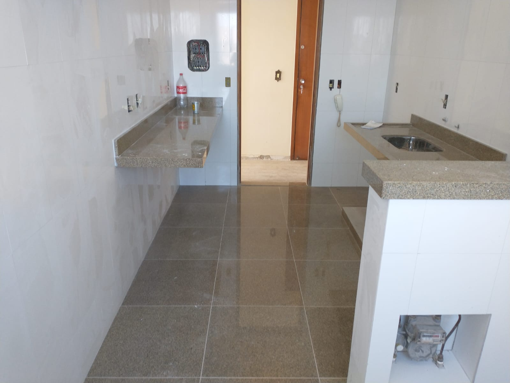

Bem Vindo
É muito bom que você esteja em nosso site, que tal conhecer os nossos serviços ou até fazer um orçamento com a gente
Sobre a SCR
Somos uma empresa dedicada e empenhada em entregar o melhor para nossos clientes.
Somos especialistas em varios assuntos, dentre eles:
- Encanamentos:
- Troca e instalação de pizos azuleijos e porcelanatos:
Com espelista capacitado e com ferramentas especiais, entregamos um encanamento com tubulações de alto padrão e com risco quase zero para vazamentos.

E realizado todo o cuidado para a instalação de azuleijos e porcelanatos para que o pizo não solte e fique impecavel